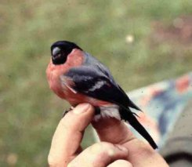
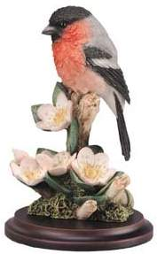

Thursday, March the 4th, 2004
back to: title, date or indexes
As a service to all those readers who have a bullfinch to feed, I have consulted that invaluable reference work Enquire Within Upon Everything (1856 edition), which tells us: “Old birds should be fed with German Paste No. 2, and occasionally rape-seed. The Germans occasionally give them a little poppy-seed, and a grain or two of rice, steeped in Canary wine, when teaching them to pipe, as a reward for the progress they make. Bird organs, or flageolots, are used to teach them.” Didn't the Victorians use a lot of commas? Note that no information is given about the feeding of young bullfinches, which I would have thought would be a more urgent matter. If you are one of the few readers who does not have a bullfinch to feed, but wish to obtain one, this is what they look like:

Two bullfinches : only feed German Paste No. 2 to the one on the left
Now, having installed your bullfinch in suitable accommodation, you will be wondering where to get your German Paste No. 2. I recommend Joseph Sterry & Sons, “manufacturers of poor man's plaisters and German Paste”, 2 Mint Street (opposite St George's church) Borough High Street, London SE. Last time I checked, in 1873, the business was thriving. While you are there, pick up some of their poor man's plaisters in case your bullfinch pecks you with its fierce, lacerating beak or attacks you with its talons, which it may well do if you mistakenly feed it German Paste No. 1, or indeed No. 46.